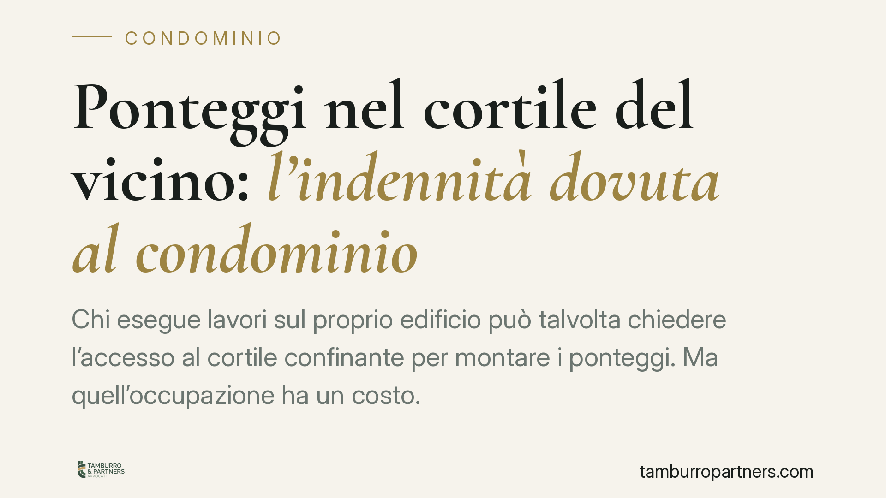

Ponteggi nel cortile del vicino: l'indennità dovuta al condominio
Chi esegue lavori sul proprio edificio può talvolta chiedere l'accesso al cortile confinante per montare i ponteggi. Ma quell'occupazione ha un costo. Una recente pronuncia di merito è tornata sul tema, riconoscendo al condominio sacrificato un'indennità ex art. 843 c.c. e offrendo un criterio di quantificazione legato al valore d'uso dei posti auto temporaneamente sottratti.

Il caso
Un condominio si vede costretto a concedere l'uso del proprio cortile per consentire al fabbricato confinante di installare i ponteggi necessari a lavori di manutenzione. L'occupazione comporta l'indisponibilità di alcuni posti auto per l'intera durata del cantiere.
Il condominio agisce in giudizio per ottenere un ristoro economico. Il giudice, avvalendosi di una consulenza tecnica d'ufficio (CTU), accoglie la domanda e liquida un'indennità parametrata al costo che i condomini avrebbero dovuto sostenere per reperire altrove posti auto equivalenti: il cosiddetto costo sostitutivo.
Un chiarimento sugli estremi. La pronuncia è presentata nelle fonti divulgative con un numero e un anno (2026) che, trattandosi di decisione descritta come già emessa, meritano verifica diretta in banca dati prima di ogni citazione ufficiale. In attesa di conferma, trattiamo il principio in termini generali, perché è questo a rilevare per l'operatore condominiale.
Inquadramento normativo
L'art. 843 c.c. disciplina l'accesso al fondo altrui. Al primo comma stabilisce che il proprietario deve permettere l'ingresso e il passaggio nel proprio fondo a chi vuole costruire o riparare un muro, un'opera propria o comune. È il fondamento giuridico che consente, ad esempio, di montare ponteggi sfruttando lo spazio del vicino.
Lo stesso articolo prevede però due tutele a favore del proprietario che subisce l'accesso. La prima: se l'ingresso cagiona un danno, è dovuta un'adeguata indennità. La seconda, distinta: quando l'accesso ha per oggetto l'esecuzione di opere, può essere richiesto un deposito cauzionale a garanzia dei danni eventuali. Sono due istituti diversi — ristoro del pregiudizio effettivo l'uno, garanzia preventiva l'altro — che non vanno confusi.
Sul piano della quantificazione, il criterio del costo sostitutivo non rappresenta una rottura con il sistema. L'art. 1226 c.c. consente al giudice la liquidazione equitativa del danno quando non può essere provato nel suo preciso ammontare. Il costo sostitutivo è, in sostanza, un modo per ancorare quella valutazione equitativa a un parametro oggettivo e verificabile: quanto sarebbe costato procurarsi ciò che si è perso. Non un principio inedito, dunque, ma un'applicazione ragionata di criteri già noti.
Implicazioni pratiche
Per il condominio che subisce l'occupazione, il dato operativo è chiaro: la concessione dell'accesso non equivale a tollerare gratuitamente il sacrificio. Quando dall'occupazione deriva un pregiudizio concreto — la perdita temporanea di posti auto, di spazi comuni, di utilità — matura il diritto a un'indennità.
Resta aperto un profilo tipicamente condominiale: a chi spetta l'indennità. Se il cortile è bene comune, la legittimazione a pretendere il ristoro fa capo al condominio come gestione collettiva, salvo che il pregiudizio ricada su singoli condomini assegnatari di posti auto in via esclusiva. In quest'ultimo caso la posizione del singolo va distinta da quella dell'ente, e la ripartizione delle somme recuperate segue la titolarità effettiva dell'utilità compromessa.
Per chi esegue i lavori, l'avvertimento speculare: l'accesso è un diritto, ma non è a costo zero. Occorre mettere in conto l'indennità e, ove richiesto, il deposito cauzionale.
Cosa fare in concreto
- Documentate il pregiudizio fin dall'inizio. Fotografate lo stato dei luoghi prima del montaggio, registrate date di inizio e fine occupazione, individuate con precisione i posti auto o gli spazi sottratti.
- Deliberate in assemblea l'azione di tutela e il conferimento di mandato, verificando nel contempo se il danno sia comune o riferibile a singoli assegnatari.
- Richiedete una stima tecnica del costo sostitutivo o del valore d'uso dello spazio occupato: una base documentale solida orienta la liquidazione, anche in sede equitativa.
- Valutate la richiesta di deposito cauzionale ex art. 843 c.c. prima dell'avvio dei lavori, come garanzia distinta rispetto all'indennità.
- Verificate gli estremi di ogni precedente prima di invocarlo in diffida o in giudizio: una citazione imprecisa indebolisce la posizione.
Consigliamo di affrontare questi passaggi prima che il cantiere apra: a occupazione avviata, la prova del danno diventa più incerta e la trattativa più sbilanciata.
Disclaimer
Contributo informativo a cura di Tamburro & Partners Avvocati - Avv. Giuseppe Tamburro. Non costituisce parere legale.
Ogni condominio ha una storia a sé.
Se gestisci un'amministrazione e vuoi un confronto su una specifica questione condominiale, scrivi allo studio. Ti rispondiamo entro un giorno lavorativo.